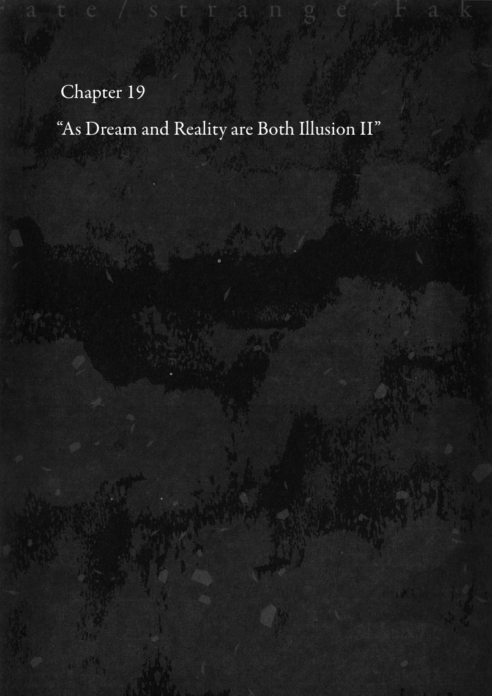
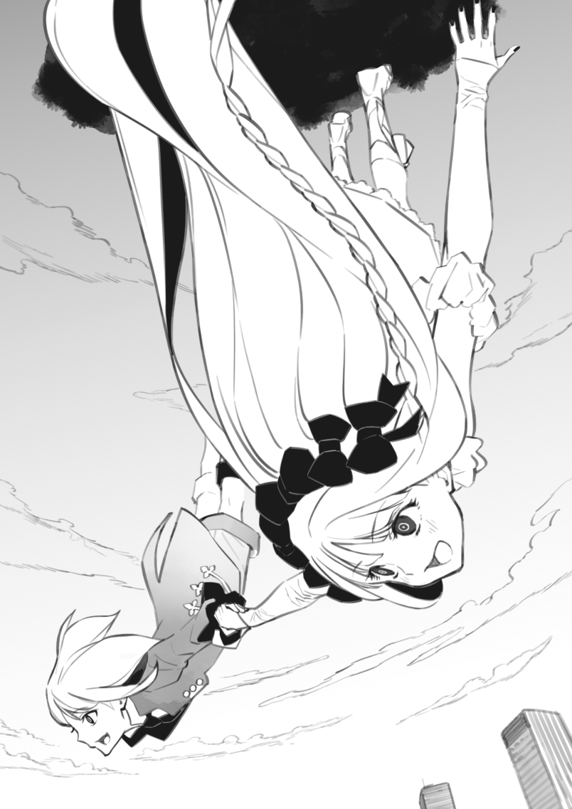

"interessada em você! . . . Você gostaria se eu dissesse isso? Você não sente nada? Ah, entendi então. Era só isso que eu tinha para dizer!"
Foi essa a única resposta que ele recebeu, e aquilo não fez sentido algum para ele. Sigma, que não sabia a aparência dos próprios pais, não sabia como agir diante de Tsubaki, que estava sendo criada pelos seus, mas ao menos compreendeu uma coisa na conversa com Yūkaku: ser criado pelos pais não significava necessariamente um patamar de "felicidade" mais alto do que ser criado por um órgão do governo, como acontecera com ele.
Talvez houvesse diferença nas porcentagens, mas os magos já eram, para começar, seres muito distantes dos sentimentos humanos.
Quando imaginou como seria estar no lugar de Tsubaki, ele se perguntou se aceitaria perder a liberdade e ser tratada como uma "fábrica" de Circuitos Mágicos, sempre dormindo e incapaz até de cumprir ordens.
Não muito antes, ele chegara à vaga conclusão de que "não achava que seria tão diferente assim".
Nesse sentido, Kuruoka Tsubaki provavelmente era parecida com ele, pensou Sigma.
Naquele mundo falso, talvez ela tivesse encontrado o "sono tranquilo" que ele desejava.
Derrotar o Servo dela significaria destruir a paz dela.
O que eu devo fazer, então?
Ele não tinha ordens para aquela situação e, a menos que escapasse daquele mundo, também não receberia nenhuma.
Ele se lembrou do que Francesca lhe dissera logo antes do início da Guerra do Santo Graal Falsa.
"Depois que invocar um Espírito Heroico, faça o que tiver vontade."
O que eu tiver vontade, é?
Separado de Francesca e Faldeus e forçado a pensar e agir por conta própria, Sigma encarou as próprias mãos e começou a considerar a questão seriamente.
Naquele momento, não havia nada que ele pudesse fazer além de pensar.
O que eu devo fazer?
Enquanto Sigma se atormentava com a própria dúvida, Assassin ativou um de seus Fantasmas Nobres.
"Afunde em uma prisão escura . . . Sensibilidade Meditativa: Zabaniya."
Um Fantasma Nobre do tipo percepção, que a sincronizava com o espaço ao redor como se ela fosse a sombra do mundo e lhe permitia sentir os fluxos próximos de Energia Mágica e de vento.
Usando essas correntes, ela tentou localizar ou a "gigantesca sombra negra" que parecia estar controlando o cachorro de três cabeças, ou o hematófago que certamente tinha ligação com aquele mundo.
". . .?"
O que ela encontrou, porém, foi uma corrente diferente de Energia Mágica.
Ela emanava um fluxo estranho, como se estivesse bagunçando o equilíbrio da Energia Mágica em toda a cidade.
Era um fluxo infinitesimal. Sem seu Fantasma Nobre, ela não teria sido capaz de percebê-lo.
Isso é . . . Energia Mágica vazando?
Não, entrando? Ou então . . .
O fluxo era como se o mundo inteiro respirasse Energia Mágica por aquele único respiradouro.
Ela hesitou por um instante, dividida entre seguir o cachorro gigante de três cabeças ou não, mas por fim decidiu acompanhar aquela flutuação de Energia Mágica.
Ela pensou que o lugar para onde aquilo apontava era simbólico demais e talvez até oferecesse uma pista para escapar daquele mundo.
Ela seguiu na direção da origem daquela estranha corrente de Energia Mágica naquele mundo equilibrado.
Rumo ao topo de Crystal Hill.

Ayaka Sajou
Por que ela visitara aquela cidade justamente quando a "Guerra do Santo Graal Falsa" começara?
Isso era algo . . . que nem ela mesma sabia ao certo.
Enquanto vagava por sua cidade natal, Fuyuki, acabara entrando num edifício parecido com um castelo, em meio à floresta.
Lá, fora capturada por uma mulher belíssima de cabelos brancos, e algo lhe fora feito.
Olhando em retrospecto, achava que devia ter sido algum tipo de magia de controle mental, mas Ayaka não sabia muito sobre magia e não tinha certeza dos detalhes.
No instante seguinte, porém, já estava sendo colocada num navio rumo aos Estados Unidos com apenas a ordem de "participar da Guerra do Santo Graal americana".
Ela não sabia ao certo por que precisara ir de navio, mas, considerando que não tinha passaporte, quase certamente entrara no país ilegalmente.
Na verdade, haviam lhe dado um passaporte falso e um visto dentro do navio, mas ela nunca chegou a passar pela imigração.
As lembranças da viagem também eram nebulosas. Antes que percebesse, já era capaz de falar inglês. Isso provavelmente também tinha algo a ver com magia.
Abandonada na costa oeste dos Estados Unidos nesse estado, Ayaka foi obrigada a usar o pouco dinheiro que lhe tinham dado para seguir rumo a Snowfield.
As palavras "Vou apagar essa 'Chapeuzinho Vermelho' que foi gravada em você."
Talvez fossem uma forma de sugestão que a levou a depositar esperança em algo tão vago e a vir até ali por causa disso.
Ou talvez ela só tivesse sido amedrontada pela ameaça simples demais - até para uma maldição - de que "se fugir, uma maldição devorará a sua vida".
Ayaka.
Eu sou Sajou . . .
Ayaka.
Ela se lembrava de que era "Ayaka Sajou" em inglês enquanto repetia "Ayaka" sem parar.
Enquanto fazia faculdade . . . eu morava nos Apartamentos Semina e . . . Faculdade . . .?
Em qual faculdade?
As lembranças estavam ficando turvas.
Ela não conseguia se livrar da sensação de que todas as suas memórias, do nascimento até aquele instante, estavam afundando numa névoa espessa.
Não, não era só sensação.
Suas lembranças estavam realmente ficando cada vez mais turvas, pouco a pouco.
Ayaka.
Sajou . . .
Ayaka.
Eu sou Ayaka.
Sua identidade se apagava como uma estrela diante da lua. Para ela . . . aquele nome era uma senha para se manter inteira.
O Presente, a Cidade no Mundo-Barreira
Um vento se aproximava.
Um vento se aproximava.
Um vento de morte que ameaçava varrer a vida de Ayaka junto com as memórias que vacilavam dentro dela como névoa.
"Ah . . ."
Ela não conseguiu reagir.
Um cachorro gigantesco, maior do que uma casa, desferiu um golpe em alta velocidade com garras grossas como braços de escavadeira, levantando uma rajada feroz no meio da rua.
Quanto tempo havia passado desde que a besta gigante de três cabeças - Cérbero - começara a atacar a polícia?
Uma parte dela sentia que tinham sido só alguns minutos, enquanto outra achava que já passara de meia hora.
Ayaka seguira as instruções de Saber e se refugiara dentro de um prédio próximo, mas o interior do edifício começara a desabar como consequência dos ataques daquela enorme besta.
No instante em que saiu correndo para fora, às pressas, encontrou Cérbero bloqueando seu caminho, como se estivesse esperando por ela.
Cada uma das garras de Cérbero fazia Ayaka pensar em uma espada afiada.
Se encostassem nela, ela morreria.
Quando esse fato de fato se assentou dentro dela, as garras já estavam a poucos metros de Ayaka.
Não importava o que fizesse a essa altura: era tarde demais para desviar.
Hã?
O que é que eu . . .?
Será que o fato de ter lhe ocorrido que seu nome era Sajou Ayaka... era só sua vida passando diante dos olhos porque o cérebro percebeu que ela estava prestes a desaparecer?
Com as memórias enevoadas, o que lhe relampejou na cabeça não foi a vida inteira, mas apenas o próprio nome.
". . ."
Seu corpo enrijeceu.
Mas, diante dela . . . não surgiu uma lembrança do passado, e sim o presente indisputável, que apareceu para varrer o desespero que se aproximava.
Houve um estrondo, e a ponta de uma daquelas garras parecidas com espadas saiu voando pelo ar.
"Saber!"
"Está bem, Ayaka?"
Saber segurava o que parecia ser uma alabarda.
Ela emitia uma luz claramente anormal. Até alguém leigo como Ayaka podia ver que não era uma arma comum.
Mas não era a espada que Saber trazia originalmente consigo.
Sua espada ornamentada havia sido confiscada pela polícia, e ele perdera a espada decorativa da mansão na batalha contra o Espírito Heroico dourado.
"Ei . . . isso é meu!" gritou um policial ali perto, de black power curto.
Ele arregalou os olhos, olhando das próprias mãos para a arma nas mãos de Saber. Ayaka percebeu que Saber devia tê-la arrancado dele.
"Desculpe! Peguei emprestado! Era uma emergência, então agradeço se deixar passar!"
Saber devolveu a arma com um movimento leve, e o policial a apanhou às pressas, lançando um olhar afiado para Saber. Mas, ao ver Ayaka ilesa, limitou-se a rearmar a própria postura para voltar ao combate sem dizer mais nada.
"Só desta vez. Na próxima, eu te prendo por furto."
"Que medo! Não quero acabar na forca!" Saber riu e, despreocupadamente, apanhou do chão, a seus pés, a garra decepada da besta demoníaca.
"Hã? O que você vai . . .?"
Ayaka mal abrira a boca quando Saber segurou a ponta da garra e a brandiu como se fosse um taco de beisebol.
"Ex . . . calibur . . .!"
Por um instante, a garra da besta demoníaca que ele havia apanhado brilhou com mais intensidade e disparou uma faixa de luz.
O corte de luz rasgou a Rua Principal rumo ao cruzamento onde a besta demoníaca mantinha posição.
Ele cravou-se no flanco da criatura e fez seu corpo maciço cambalear, espalhando sangue negro.
"Será que pegou?!"
". . .
Não, não parece ter surtido muito efeito", respondeu Vera friamente a John.
Não era apenas uma questão de tamanho.
Sua dureza, o fio das garras e a intensidade da aura de morte que a envolvia estavam muito acima do que eram quando a encontraram diante do hospital.
Quase como se quisesse provar, por meio daquela força, que aquele mundo era o verdadeiro território da besta demoníaca.
Os policiais ali perto e Ayaka esperavam que Saber emendasse outro ataque, mas ele fincou no chão a garra arrancada da besta, ainda segurando-a, e, com voz clara, dirigiu uma pergunta ao colosso.
"Ó cão de guarda, guardião do poço sem fundo! Escuta, se tens discernimento! E responde à minha pergunta!"
"Hã?"
". . .?!"
Ayaka deixou escapar uma exclamação perplexa, enquanto Vera, John e os demais policiais arregalavam os olhos para o rosto de Saber.
Saber não deu a menor atenção a eles e bradou como se estivesse trocando apresentações com um general inimigo em pleno campo de batalha.
"Não somos almas que deram as costas ao submundo e lutam contra o julgamento e a quietude! Somos homens vivos que um dia hão de encontrar a morte enquanto trilham o caminho reto! Se quiseres, julga-me a mim, um Espírito Heroico, como alma que escapou da morte! Os demais, porém, estão vivos sem sombra de dúvida! Se és o companheiro jurado e leal do senhor do submundo, então cumpre o teu dever como deves! Que dizes?!"
Sua figura assumia uma majestade quase absurda.
Até a própria Ayaka, ainda confusa, quase foi arrastada por aquela performance.
Sua presença era grandiosa a esse ponto. Ali, ele mostrava um lado diferente daquele que discutira se deviam ou não matar uma garotinha, e diferente também daquele que jurara proteger Ayaka.
Se tivesse de comparar com alguma coisa, era mais próximo de quando ele fizera o discurso em cima do carro de polícia, mas o fato de estar discursando em uma situação tão perigosa e para uma besta colossal que talvez nem entendesse palavras tornava tudo ainda mais singular.
Mesmo assim, a atitude de Saber era tão digna que quase obrigava Ayaka e os policiais a acreditar que aquela era a única coisa correta a fazer.
". . ."
Cérbero fitou Saber com desconfiança e aproximou lentamente as três cabeças dele.
"Ei, ele parou de atacar."
"Não me diga que ele entende linguagem mesmo . . ."
John e os outros oficiais murmuraram entre si, observando a situação se desenrolar. Cérbero trouxe os três rostos para perto de Saber e começou a farejá-lo.
Mesmo com mandíbulas enormes, grandes o suficiente para engolir uma vaca inteira, fechando-se sobre ele por três lados, Saber continuou imóvel, sem mover um músculo.
Pouco depois, Cérbero meneou as três cabeças. Mal elas trocaram olhares . . . seu corpo colossal recuou e as três cabeças se voltaram para o céu, soltando um uivo retumbante.
"Grrrrrrooooooooooaaaaaa . . ."
A tríade de uivos transmitia tanto calor que parecia expelir fogo.
Ayaka não conseguiu deixar de se encolher. Estranhamente, porém, não sentiu vontade de fugir.
Talvez instintivamente tivesse percebido que o lugar mais seguro dentro daquele mundo-barreira . . . era justamente aquele cruzamento onde se concentrava o maior "poder de combate".
Mesmo assim, ela não conseguiu afastar a inquietação.
Na verdade, a cena que se desenrolou diante de seus olhos no instante seguinte ameaçou dominá-la com puro terror.
Os uivos ecoaram, e o espaço ao redor deles estremeceu.
Então, como se acompanhassem essas vibrações, "sombras" começaram a brotar por toda a cidade.
Becos sem sol, embaixo de carros estacionados, os espaços subterrâneos sob os bueiros.
Algo parecido com névoa negra se ergueu de todos os lugares e começou a se solidificar em incontáveis massas ao redor do cruzamento.
Logo, elas se juntaram em alguns pontos. E, em cada um desses pontos, chocantemente, manifestaram-se seres idênticos ao Cérbero que já dominava a área.
"Mas que . . ."
John começou a suar frio ao examinar os arredores.
Onde, um momento antes, havia uma única besta maciça de três cabeças, agora havia inúmeras outras. Elas se erguiam sobre prédios e ruas, cercando completamente os oficiais, Ricardo e Ayaka.
A cidade que, poucos minutos antes, estava silenciosa, subitamente foi encoberta pela presença da morte.
O bando de bestas gigantes não entrou em fúria. Apenas observava em silêncio, com olhos cheios de trevas profundas.
E não era só isso. As "sombras" criadas aos pés do grupo também se contorceram e se tornaram uma nova névoa negra, cobrindo a área como nuvens de moscas.
". . ."
"Z . . ."
"r . . ."
". . . oh."
". . ."
". .
. z . . . Ah."
". . ."
". . . -"
"Z."
". . . g . . ."
". . ."
Um ruído semelhante ao zumbido de insetos reverberou pelo cruzamento.
A névoa negra, somada àquele som, lembrou a todos um enxame de moscas e trouxe à tona uma atmosfera de morte ainda mais densa naquele mundo.
No instante seguinte . . . o ruído se transformou numa "voz" dotada de sentido, que bateu contra os tímpanos do grupo cercado.
"Viventes."
"Vocês que estavam vivos."
"Atenção."
"Não há vida" "em vocês."
Então.
As "sombras" começaram a se espalhar pela cidade.
Como se estivessem revelando a verdadeira forma daquele mundo.
Ou como se estivessem escondendo sua verdade de "alguém".
"Ah, ótimo. Já começou a se misturar direitinho..." A figura que observava os acontecimentos do alto de um prédio a certa distância do cruzamento onde estava o grupo de Saber - Jester Karture, na forma de um garoto - murmurou em êxtase enquanto observava a paisagem da cidade se transformar.
"O cão de guarda de Hades foi uma surpresa. O Rider da Tsubaki realmente encontrou uma raridade."
Jester falou em tom infantil, com um sorriso torcido que estava muito longe de ser inocente, enquanto voltava seus sentidos para o estado da cidade.
". . .
Hmm. Então é para lá que você vai, senhorita Assassin."
Sentindo, às costas, a Energia Mágica de Assassin se mover rumo ao prédio no centro da cidade, Jester entortou os cantos da boca, deixando aparecer um vislumbre de caninos afiados.
"Parece que você ainda não desistiu."
"Talvez eu devesse te dar mais um empurrão."
A Cidade no Mundo-Barreira, Residência Kuruoka
"Quem está aí? Onde você está?"
Como resposta, uma voz andrógina chegou aos ouvidos de Tsubaki vinda de algum ponto da casa.
"Hehehe. Tente me encontrar, senhorita."
Como se fosse atraída por aquela voz, Tsubaki começou a cambalear pela casa.
"Na verdade, eu preciso mesmo que você me encontre."
"?"
"O que está acontecendo no mundo atual? O fato de minha consciência, que já devia ter se dissolvido no mundo, ter vindo à tona significa que aconteceu algo extraordinário. Zheng... deve estar ou no submundo ou na terra dos imortais, mas será que não restou ninguém que me conheça?"
A voz não parecia falar com Tsubaki tanto quanto analisar a situação para si mesma.
"Não... Sinto várias presenças que lembram a Era dos Deuses... No céu há . . . ah, uma encarnação do 'Watcher', que para mim é ancestral, estranho e dependente. Haveria também um deus do oeste? Uma divindade da natureza . . . Não, uma parte de uma...? Também sinto um volume de água incrível vindo de muito longe, a oeste, mas isso é mera coincidência ou inevitabilidade?"
"??"
"Quer me pôr à prova? Muito bem, mundo mesclado à Ordem Humana. Ó mundo dos homens, incompleto e ainda assim impecável, aceito o teu desafio! Espere, eu mesma - não se apresse; não perca! Todas as coisas entre céu e terra, sejam elegantes e refinadas como um riacho murmurante..."
"???
Hum . . . Desculpe, eu não estou entendendo."
Tsubaki ficou confusa com aquelas palavras. A "voz" se calou por um instante, aparentemente perturbada pela incompreensão dela, e então prosseguiu.
"Ah, perdoe-me... Estou numa situação difícil. Você me ajudaria?"
"Ajudar como?"
"Vamos brincar de esconde-esconde! Se me encontrar, você vence. Tudo bem?"
"Esconde-esconde!"
"Isso. Um, dois, três, quatro . . . pronto, estou escondida. Se me encontrar, eu lhe dou uma calda bem docinha, está bem?"
"! . . . Tá bom!"
Vista de fora, soava exatamente como um sequestrador suspeito. Tsubaki podia não conhecer muito da vida, mas, mesmo assim, em circunstâncias normais teria se assustado e ido chamar os pais. Por algum motivo, porém, obedeceu à "voz".
Tsubaki ainda se sentia convencida de que aquela voz era "amiga".
Era uma voz gentil que a envolvia.
Quase como as vozes de seus pais, pelas quais ela tanto ansiara por todo aquele tempo.
Tsubaki andou pela casa seguindo a orientação e acabou parando diante de uma parede. "?
Mas a sua voz parece vir daqui . . ."
Tsubaki interpretava a "presença" do dono da voz confundindo-a com a direção de onde achava que o som vinha. Ela parou ali, confusa, quando . . .
"Sim, está tudo bem... Tente pedir à parede para deixá-la passar."
"Hã? Hum . . ."
"Não se preocupe. Seu papai e sua mamãe sabem usar magia, não sabem? Você também sabe."
"!"
"Sim!"
Tsubaki assentiu com força, então se voltou para a "parede" e fez um pedido.
"Hum . . . Abre-te, sésamo!"
Ela gritou as palavras de um conto de fadas de uma terra distante que lera nos últimos dias.
Então sentiu o corpo inteiro esquentar.
O calor percorreu suas costas - bem onde, há muito tempo, ela sentira uma dor intensa, quando seus pais tinham feito nela algo que chamavam de "experimento". Tsubaki se surpreendeu por um instante, mas não houve dor; apenas um calor semelhante ao do sol suave, que correu silenciosamente por seu corpo.
A Energia Mágica começou a fluir de Tsubaki para dentro da parede sem que ela sequer percebesse que aquela sensação vinha da resposta de seus Circuitos Mágicos.
No instante seguinte, a parede se contorceu como um ser vivo e se abriu, revelando uma escada que descia para o porão da casa.
"Uau..."
Os olhos de Tsubaki brilharam diante da cena misteriosa.
"Agora, será que consegue me encontrar, princesa?"
Guiada novamente pela voz, Tsubaki começou a descer a escada devagar.
Então, depois de passar por várias outras barreiras, todas automaticamente desfeitas da mesma forma, ela encontrou . . . o ateliê de um mago, decorado com muitos livros, Artefatos Místicos e os mais variados aparelhos experimentais.
"Ah . . ."
Tsubaki estremeceu de surpresa.
Não.
Ela conhecia aquele lugar.
Este lugar é . . .
No fundo daquela sala ficava o lugar para onde ela sempre ia "ajudar".
Não. Não.
Para "ajudar" nos "experimentos" do papai e da mamãe.
A lembrança da dor atravessou de novo seu cérebro.
"Eee . . ."
Eu tenho que aguentar.
Tenho que ser uma boa menina. Tenho que aguentar . . . ou papai e mamãe não vão sorrir para mim.
Foi como um efeito rebote.
Pelos últimos dias, ela vivera aqueles "dias felizes" com os quais continuara a sonhar, numa inocência infantil.
A dor que a menina só conseguira esquecer graças a essas experiências alegres voltou toda de uma vez.
As lembranças e emoções negativas de Tsubaki transbordaram como se uma barragem tivesse estourado, e seus olhos se encheram de lágrimas, quando . . .
"Oi."
Uma voz.
Uma voz soou naquela sala, onde ela estava prestes a ser consumida pelo trauma do passado.
Era só uma palavra.
Mas aquela única palavra bastou para fazer o medo que brotava do coração de Tsubaki se dissipar como névoa.
Era a voz que, até aquele instante, Tsubaki ouvira apenas dentro da própria cabeça.
Mas agora era diferente.
A voz nítida fazia o ar da sala vibrar de verdade.
"Parece que você me encontrou. Aqui, tome uma calda docinha."
Na mão elegante estendida para Tsubaki havia algo parecido com mel guardado dentro da concha de um molusco bivalve.
A dona daquela mão era . . . uma figura belíssima.
De aparência andrógina, Tsubaki não conseguia dizer se era homem ou mulher.
Se tivesse conhecido Enkidu, talvez tivesse tido uma impressão parecida.
Ao contrário de Enkidu, vestido de maneira simples, porém, aquela figura estava envolta numa aura de opulência produzida por sua maquiagem singular e pelas roupas vermelhas exuberantes. No instante em que a viu, Tsubaki se perguntou se não seria o rei ou a rainha de algum país estrangeiro.
"A-ah, hum . . . Você é uma pessoa importante?" Tsubaki não conseguiu deixar de perguntar diante daquele ser deslumbrante, tão deslocado dentro daquela sala.
"Não exatamente", respondeu a bela figura. "Fui importante há muito tempo e, além disso, não sou uma pessoa. Veja, eu estava em um lugar onde posição social não tinha importância e..."
"?"
"Ah, voltei a falar de coisas difíceis. Desculpe. Já se passaram dois milênios e alguns séculos desde a última vez que falei com um ser humano, entende? Na verdade, eu sou algo como um eco, então isso não é estritamente verdade... Ah, falei de novo algo que você provavelmente não entende! É por coisas assim que eu nunca consegui me dar bem com os humanos, e acabaram me expulsando tanto dos sonhos quanto das águas, até eu ir me dissipando...!"
A bela figura fez um espetáculo de se jogar num canto, choramingando.
"H-Hum, você está bem?"
Tsubaki esqueceu o medo e correu até ela, dando tapinhas em suas costas.
"Obrigada, criança humana. Você é gentil."
A figura recuperou a compostura, estabilizou a respiração e falou com Tsubaki.
"Ah, mas não precisa se preocupar tanto. Só posso falar com você por pouco tempo. Ainda assim, é só com você, governante deste mundo, que consigo estabelecer uma conexão..."
"O que é 'governante deste mundo'?"
"É . . . algo como a personagem principal de um conto de fadas... Ah, isso não serve. Os aglomerados de 'morte' estão ficando ativos..."
Tsubaki fitou, preocupada, o semblante sofrido da bela figura enquanto continuava a lhe alisar as costas. Forçando um sorriso para a menina, a figura apontou para uma parte da sala.
"Não se preocupe. Você só precisa pegar aquilo ali."
Tsubaki seguiu a direção apontada e olhou, confusa.
Ela não fazia ideia de para que servia aquilo.
Parecia muito com os "arcos" que as pessoas usavam nos livros ilustrados.
Só tinha um formato bem mais complicado. Ela achou que o caçador que derrotava o lobo no fim do seu livro ilustrado da Chapeuzinho Vermelho talvez tivesse um desses.
"Aquilo ali se chama Besta Mata-Deuses. É uma arma assustadora, assustadora mesmo, que pertenceu a um humano caprichoso que, há muito tempo, foi um rei importantíssimo... Na verdade, foi o primeiro a se chamar de rei dos reis, um 'imperador'."
"Uma arma . . .? Ele vencia os maus com ela?"
"Fui eu quem ele venceu com ela . . . mas, pelos valores humanos da época, suponho que sim."
A bela figura respondeu, constrangida, desviando o olhar de Tsubaki, que fitava a besta com olhos brilhantes.
"Bem, isso não importa", prosseguiu, como se quisesse varrer o assunto para debaixo do tapete. "Enquanto você a mantiver consigo, vou conseguir ajudá-la nesse breve tempo antes de desaparecer. Eu só quero entender o que está acontecendo. Se me levar para fora, realizarei um desejo seu em agradecimento."
". . . Tá bom!"
Tsubaki não entendia o significado de tudo o que aquela pessoa estranha dizia, mas compreendia que alguém que lhe transmitia segurança, como se fosse família, estava lhe dizendo que realizaria seu desejo.
Lembranças de livros ilustrados como Cinderela dançaram na cabeça de Tsubaki enquanto ela, inocentemente, tentou erguer a besta . . . mas ela era mais pesada do que parecia, e a menina cambaleou e caiu sentada.
"Oh, essa foi por pouco! Você não se machucou, não é?"
". . .
Não", respondeu Tsubaki com alguma dificuldade.
Tentou se pôr de pé de novo, mas Tsubaki era pequena até para a própria idade, e parecia que já seria muito se conseguisse simplesmente arrastar a besta atrás de si.
"Você não consegue andar carregando isso...? Ugh . . . Eu não tinha levado em conta como os humanos são fracos... Maldito Zheng! Ele exagerou demais nos Artefatos Místicos e nos enfeites só para me derrubar! Isso claramente é excesso! Entre isso aqui, a Grande Muralha e o Palácio de Epang que ele estava construindo, será que achava que tudo precisava ser grande e espalhafatoso? Francamente..."
A bela figura estava repreendendo alguém quando, de repente, pareceu ter uma ideia.
"Espere. Neste mundo, você é a 'governante'... então, se acreditar que isso é leve, deve conseguir carregá-la sem dificuldade... Mas, ainda assim, será que esta menina ainda não percebeu que está sonhando...?"
A figura murmurou essas últimas palavras baixo, para que Tsubaki não ouvisse.
"Já sei, você devia chamar alguém para ajudá-la. Pode ser o seu pai ou a sua mãe. Tenho certeza de que vão ajudá-la se você pedir."
"Tem certeza . . .?"
"Olhe, tem alguém chegando. Tente pedir a essa pessoa", propôs a bela figura, ouvindo passos vindo da escada.
"Tá bom . . . Ah."
Tsubaki esperava ver a mãe ou o pai, que haviam sido tão gentis com ela nos últimos dias, e já estava pronta para pedir ajuda . . . mas a pessoa que apareceu na escada não era nenhum dos dois.
"Então era aqui que você estava . . . Isso é o ateliê da sua família . . .?"
O mercenário vestido inteiramente de preto, Sigma, primeiro viu Tsubaki . . . ". . .!
Quem é você?"
E então notou a bela figura atrás dela, assumiu uma postura defensiva e observou para ver se havia hostilidade. Depois de contemplar aquele magnífico traje vermelho, porém, ele murmurou, em dúvida:
"A Inquisição . . .?"
A Cidade no Mundo-Barreira, Crystal Hill, Último Andar
"Oh, alô, professor! Sou eu! Você sabe, eu!"
"Flat?! Essa resposta é . . . O que está acontecendo?! De onde você está ligando?!"
Um celular repousava sobre um "altar" improvisado.
Estava no viva-voz, e dele emanava a voz de um homem em tons misturados de alívio e confusão.
"Ah, senhor! Desculpe por ter demorado tanto para ligar. Eu, hum, não tenho muita certeza. É quase como se eu estivesse num sonho, ou..."
". . .
O quê? Não me diga que você de fato dormiu demais e esqueceu de me ligar?!"
"O quê?! Não! Como assim?! Não foi isso que eu quis dizer! Eu quis dizer que estou, hum, dentro de uma barreira. Isso, dentro de uma barreira! É meio como aquela 'repetição do passado' em que o senhor e a Gray ficaram presos naquele cemitério no País de Gales, só que esta aqui é uma 'repetição do presente'..."
". . .?
Espere, espere um momento! Acalme-se e me explique a situação desde o começo."
Flat abriu um sorriso radiante ao ouvir a voz do homem - Lord El-Melloi II - voltar ao tom normal que usava para repreender alunos.
Ele sorriu porque sabia que, apesar da situação - ou justamente por causa dela -, ia poder ouvir uma "aula" da Escola El-Melloi em sua melhor forma.
E também sorriu porque tinha fé de que essa aula o levaria a um caminho para sair do aperto atual.
Claro, se Flat conseguiria ou não transformar esse caminho em sucesso, dependeria dele mesmo.
Depois de ouvir a história toda, o Lord da Torre do Relógio fez uma afirmação enigmática.
"Muito provavelmente . . . um submundo."
Flat ficou visivelmente confuso com a declaração de El-Melloi II.
"E-espera aí, professor! Isso não quer dizer que a gente já morreu?!"
"Fique quieto um instante, Flat. E . . . posso presumir que cooperará quanto à fuga, supervisor?"
"Sim, embora eu não vá interferir em conflitos entre facções. Além do mais, a Igreja Sagrada deve a você alguns favores. Você salvou a Irmã Illumia, com quem eu aparentemente fiquei preso, e..."
"Não, se estamos falando de dívidas pessoais, eu também fui salvo pelo Padre Karabo. Mas seria indigno de ambos tratarmos isso como obrigações entre nossas organizações. Neste caso, ficarei satisfeito se você ajudar meu aluno em sua capacidade de supervisor. Não tenho intenção de pedir que você se coloque em perigo."
Hanza respondeu com um sorriso enviesado e um meneio de cabeça.
"Flat, os rumores sobre seu professor estavam certos: ele não age muito como um mago. Não acredito que tenha sobrevivido nesse covil de demônios que vocês chamam de Torre do Relógio sendo desse jeito."
". . .
Fui apenas abençoado com boa sorte e bons contatos. Não preciso que ninguém me diga quão insuficientes são minhas próprias capacidades."
"Com licença, eu não quis insultá-lo. Foi um elogio. Essa sua atitude provavelmente é o que convenceu alguns dos meus colegas e predecessores a lhe dar uma mão. Dívida é dívida, por mais que você tente negar. Vou pagar o que puder por conta própria. Se um dia você se transformar em hematófago, tentarei fazer vista grossa, desde que não faça mal a ninguém."
". . .
Vejo que você também é um tanto atípico para um padre da Igreja Sagrada. Embora, claro, eu não tenha nem inclinação nem capacidade para me tornar um hematófago", respondeu El-Melloi II com exasperação aparente antes de retomar a explicação.
"Quando eu disse 'submundo', obviamente não quis dizer que vocês realmente morreram. Eu estava descrevendo a natureza da área dentro dessa barreira."
"Como assim? Não me parece muito com inferno nem com céu."
"Estou bem ciente de que você não prestou atenção às aulas, Flat. Agora, livre-se dessas noções banais. Lembre-se de que isso é, em parte, suposição, mas acredito que aquela área tem origem nos Circuitos Mágicos e na mente da garota Kuruoka Tsubaki. Se a besta - demoníaca ou talvez divina - que o Padre Cervantes viu ao longe, aquele Cérbero, foi revigorada dentro desse mundo, então ele provavelmente tem a 'natureza' de um submundo."
"Quer dizer que os dois combinam?"
"Quando Flat disse que era como estar 'num sonho', ele acertou em cheio. Também há casos em que os sonhos são percebidos como uma espécie de pós-vida, em sentido místico. O Servo da menina em coma, Kuruoka Tsubaki, criou um pseudo-submundo usando os sonhos dela como catalisador... Há outras explicações concebíveis, é claro, mas, somando as informações que recolhi ao que vocês me disseram, acho justo dizer que esta é a mais provável."
Nesse ponto, Hanza, que vinha calado até então, fez uma pergunta.
"Hum . . . Dada a minha posição, não posso discutir a pluralidade de 'pós-vidas' . . . mas você está dizendo que isto é um submundo que espelha a cidade real?"
"Existem inúmeros submundos que se parecem com o mundo dos vivos. Na verdade, as tumbas de faraós, imperadores e afins já são, por si mesmas, rituais para levar uma cidade consigo ao submundo. Há muitos relatos de pessoas que viram seus ancestrais, após a morte, levando um modo de vida idêntico em locais idênticos. E o fato de o criador deste mundo-barreira tê-lo tornado uma duplicata exata do lugar habitado pelos vivos sugere que se trata de uma entidade extremamente sistemática, mesmo para um Servo. O fato de ele ter levado Cérbero para dentro desse mundo sugere que pode estar continuando a evoluir enquanto falamos."
"Evoluir? O que isso quer dizer, professor?"
"Esse Espírito Heroico provavelmente é o próprio conceito de morte. Uma encarnação do submundo. Uma divindade do submundo, como Hades, Hera, Nergal ou Ereshkigal . . . Não, não é possível invocar uma Origem Espiritual desse calibre . . . ou não deveria ser. Além disso, um governante de submundo faria aquele mundo-barreira se parecer mais de perto com o próprio domínio. Provavelmente é algo menos atrelado a um submundo específico . . . e mais próximo do próprio conceito de morte."
El-Melloi II então passou a dissecar o mundo-barreira, que jamais vira, com a fluidez de quem lê uma conclusão já pronta no quadro-negro.
"A personalidade desse Servo provavelmente continuou aprendendo desde o momento em que foi invocado, adaptando-se às reações de sua Mestre, Kuruoka Tsubaki. É possível que ele se torne uma entidade completamente diferente a cada invocação. Como a invocação de um Ghost Liner já é um acontecimento raro, porém, não temos base de comparação. Mas agora que vocês entraram em seu mundo como entidades novas e estranhas, talvez ele exiba um tipo diferente de aprendizado."
"Mas por que nós não estamos sofrendo lavagem cerebral, professor?", interrompeu Flat.
No caminho até aquele prédio, eles haviam passado por pessoas aparentemente em estado de lavagem cerebral.
Tanto Flat quanto Hanza haviam se mantido alertas diante delas e preparado contramedidas, mas ainda não havia qualquer sinal de um feitiço de lavagem cerebral sendo lançado contra eles.
"Deve haver alguma diferença. Existem tantos métodos diferentes de lavagem cerebral que é impossível adivinhar, mas podemos restringir as possibilidades focando na pergunta: por que ele não lava o cérebro de vocês?"
"Sim! Um whydunit, né?! É o seu bordão!"
"Oh, um 'whydunit', é? De fato, nós já sabemos o 'whodunit' e, quando magia está envolvida, o 'howdunit' perde o sentido. Ainda assim, se esse é o seu bordão, você soa mais como um detetive do que como um mago."
El-Melloi II gaguejou por um instante diante do comentário de Hanza, então tossiu e continuou: "Não. Estou apenas usando o conhecimento que adquiri para análise. Se eu tivesse a perspicácia ou a inspiração de um detetive, minha vida seria bem diferente... Em todo caso, acredito que a razão pela qual vocês não sofreram lavagem cerebral está na própria razão pela qual foram arrastados para dentro desse mundo."
El-Melloi II passou então a destacar o fenômeno das pessoas que saíam da cidade e voltavam se comportando de forma estranha, a doença misteriosa que infectava animais e outras ocorrências anômalas.
Segundo informações de Flueger, um mago conhecido seu, embora houvesse diferenças individuais, havia casos de sintomas parecidos com hemorragia interna tanto em humanos quanto em animais.
Com base nessas informações, El-Melloi II teorizou que havia "uma distinção entre os infectados por uma maldição semelhante a uma doença, que tiveram apenas a mente trazida para esse mundo, e aqueles que foram arrastados para cá à força, corpo e tudo".
"É altamente provável que o segundo caso seja resultado de o Servo tratar vocês como inimigos. O primeiro também parece um ato hostil . . . mas os afetados não sofrem dano físico algum, e não há sinal de que estejam sendo usados na Guerra do Graal. É provável que ele apenas utilize meios incomuns e não tenha intenção hostil."
"Ah, isso a gente vê o tempo todo na Torre do Relógio. Gente que acha que está fazendo a coisa certa quando, do ponto de vista de todo o resto do mundo, só está sendo um estorvo gigantesco."
"Tenho vontade de dizer que você é o último que deveria falar isso, mas vou me conter por enquanto. Em todo caso, há várias maneiras concebíveis de escapar desse mundo . . . embora eu suponha que esperar até ele ficar sem Energia Mágica não seja realista. Julgando pelas circunstâncias, derrotar o Servo e a Mestre deve ser a opção mais rápida. Mas, já que vocês formaram uma aliança com a polícia para manter a menina Mestre sob proteção, não podem fazer nada que a coloque em risco."
Mesmo que não houvesse aliança, ele não teria arranjado alguma desculpa para descartar essa opção? Tanto Jack quanto Hanza se perguntaram isso. Mas, ainda que tentassem apontá-lo, tinham certeza de que El-Melloi II apenas se esquivaria da questão, então limitaram-se a dar de ombros e continuar ouvindo. Metade das freiras, por outro lado, se perguntava, de forma muito mais lógica do que El-Melloi II, por que simplesmente não eliminavam a Mestre.
"Negociar com a garota Tsubaki sem feri-la e convencê-la a abrir uma saída por conta própria . . . é uma possibilidade, mas a questão é se ela sequer sabe que é uma Mestre. Se vocês usarem sugestão ou qualquer outro meio para forçá-la, o Servo dela pode interpretar isso como um ato hostil e fazer uma tentativa mais ativa de eliminá-los."
"Então deveríamos negociar com o Servo?"
"Eu já disse: ao que tudo indica, ele está mais perto de um sistema do que de um ser com personalidade distinta. Seja o que for, o melhor é evitar contato com ele antes de termos certeza do resultado. Isso vale também para combate, é claro. Vocês viram bem ontem à noite o quão aterrorizante esse Servo pode ser."
Depois de reforçar que não deviam agir com imprudência, El-Melloi II se mostrava muito mais cauteloso com o ser que controlava o espaço em que Flat e os demais estavam do que qualquer pessoa realmente presente ali.
Afinal, certa vez ele acompanhara até dentro de uma Projeção de Realidade o Espírito Heroico que lutara ao seu lado, e aquela visão esmagadora permanecia gravada em sua memória.
"Se aquele mundo corresponde ao submundo, e o Servo é algo associado a ele, então vocês não têm para onde correr, pelo menos dentro dessa barreira. A morte está em toda parte, não só na terra dos mortos. Em termos místicos, o conceito de morte existe até no ar, na água, na pedra e na terra. Aquela sala não é exceção."
Depois de concluir essa declaração grave, El-Melloi II reforçou seu ponto pedindo que Flat e os outros fossem cautelosos.
"Em outras palavras, esse lugar inteiro sempre esteve dentro do corpo do Espírito Heroico. Vocês são como um Pinóquio engolido pela baleia."
"Na barriga de uma baleia, é? Que demais!"
"O que é que tem de 'demais' nisso?!"
A observação disparatada de Flat arrancou um grito de El-Melloi II, mas Flat continuou, os olhos brilhando.
"O senhor não nos disse em aula que o retorno de um herói depois de uma morte certa é um tipo de retorno ao ventre? E sobre o ritual com tema de morte e renascimento pelo qual todo mundo passa ao alcançar o posto de Pride? E sobre alguém que foi engolido por um peixe gigante, depois cuspido, despertou para a fé, virou um super-herói e salvou uma cidade..."
"Não me diga que você está falando do profeta Jonas e de Leviatã. É verdade que histórias heroicas envolvendo peixes gigantes, labirintos e a terra dos mortos frequentemente foram ligadas ao retorno ao ventre . . . mas espero que você não pretenda me entregar um relatório com uma compreensão tão relaxada! Enfim, essa aula suplementar pode esperar."
Exasperado, El-Melloi II mudou de assunto e passou a exemplos concretos de fuga.
"O fato de a sala em que vocês estão estar ligada ao exterior provavelmente significa que existe algo no mesmo lugar, no mundo real, que harmoniza bem com esse mundo. A possibilidade mais provável é um cadáver, mas duvido que a influência de um cadáver comum chegasse tão longe a ponto de penetrar a barreira. Deve ser um cadáver sob algum tipo de influência mística . . . ou então as condições devem ser adequadas para que ele se harmonize melhor com o Servo que está criando esse mundo. Você disse que a sala parece um ateliê. Quais são as características dela?"
"Bem, há muitos enfeites e coisas que parecem mesopotâmicas."
". . .!
Entendo. Se esse ateliê realmente pertence à facção desse Espírito Heroico, então pedir ao chefe de polícia para ir lá por nós seria mandá-lo para a morte... Nesse caso, devemos investigar as características do Espírito Heroico de dentro para fora. Não gosto de usá-los como isca, mas, se você está certo e um herói de outra facção está enfrentando Cérbero dentro da cidade, então sugiro que aproveitem a oportunidade para visitar o quarto da garota no hospital ou a casa dos magos chamados Kuruo-"
Quando a voz no alto-falante chegou a esse ponto, uma das freiras que vigiavam todas as direções gritou:
"Hanza!"
"O que foi?"
"Tem alguma coisa subindo lá de baixo! Acho que é um Servo!"
No instante seguinte . . . uma das paredes de vidro se estilhaçou em fragmentos minúsculos, e uma figura irrompeu na sala vinda do lado de fora.
"Uwawah?!"
"O que foi, Flat?! O que aconteceu?!"
Veio um grito aflito do alto-falante.
Hanza afastou com precisão os estilhaços voadores da janela, golpeando com os braços em alta velocidade, e então se dirigiu à figura que acabara de entrar pela janela.
"Ora, ora... Então você veio parar aqui também."
"Eu vi você na guarita... É um sacerdote estrangeiro?"
A recém-chegada Assassin lançou um olhar breve a Hanza, então percorreu o entorno como se dissesse que lidaria com ele depois, antes de concentrar a atenção em Flat, que tinha algo parecido com Selos de Comando na mão direita.
"Eu lhe pergunto."
"Ah, umm, oi! Ah, você é um Servo, por acaso? Uau!"
"Você é mais um dos magos que buscam o Santo Graal . . .?"
A pergunta deixou Flat confuso por um instante. Ele pensou por um momento antes de responder.
"Hmm. Não tenho muita certeza. No começo eu queria porque parecia legal, mas agora . . . meu Servo está encrencado, então acho que seria bom se eu pudesse usar o Graal para consertar isso. No fim das contas, eu me pergunto o que devo fazer. Supostamente é valioso, então você acha que eu devia doar para um museu ou algo assim?"
Recebendo outra pergunta como resposta, Assassin estreitou os olhos e examinou Flat. ". . ."
Ele não parecia estar mentindo nem tentando provocá-la.
Era difícil de acreditar, mas realmente parecia estar se perguntando se não seria melhor doar o Graal a um museu.
"Você é . . . um mago?"
Assassin fitou Flat por um momento com uma expressão que dizia que ainda não decidira se devia ou não eliminá-lo.
Como se quisesse livrar Flat daquele aperto, Hanza bateu palmas com força, chamando a atenção dela para si.
"Creio que você siga uma fé diferente da minha. Estou aqui para supervisionar esta Guerra do Santo Graal, mas não parece que eles pretendam travá-la. Pelo menos, não até sairmos deste mundo-barreira. Eu lhe disse isso como mediação no meu papel de supervisor, mas é claro que isso não limita suas ações", disse Hanza com um dar de ombros.
Se Assassin viesse realmente atrás dele com intenção de matar, era bem provável que estivesse condenado. Ele conseguia enfrentar hematófagos por afinidade. Contra um Espírito Heroico marcial, porém, seria ele quem estaria em desvantagem.
Mesmo assim, não fez menção de recuar nem de se esconder. Dirigiu-se a Assassin de forma audaciosa para cumprir as ordens do mestre que fora como um pai para ele e realizar seu dever de supervisor.
". . ."
Assassin observou Hanza com cautela, mas sem hostilidade.
Felizmente para Flat e Hanza, ela se sentia, naquele momento, em dívida por ter sido manifestada usando a Energia Mágica de um "demônio perverso" e por ter firmado pacto com alguém que não era um dos seus - e logo o "Coração de Leão". Talvez essas circunstâncias a fizessem encarar os outros com mais tolerância do que tivera no primeiro dia.
Ainda assim, havia uma linha que ela não estava disposta a cruzar. ". . .
Uma pergunta: como pretendem abrir uma saída para o lado de fora?" Seu tom era solene.
Até Flat sentiu que, "Ah, essa é daquelas perguntas que levantam uma flag de morte se você responder errado." Ele hesitou por um momento antes de responder . . .
Mas a resposta veio do telefone em cima do altar, deixado no viva-voz. "Tínhamos acabado de concordar com uma política de evitar a violência o máximo possível. Se você quiser escapar mesmo que isso signifique ferir uma menina, não temos meios de impedi-la, mas permita-me explicar que existe outro caminho."
". . .
Quem é você?"
"Algo como o guardião desse garoto. Sei que é egoísta da minha parte pedir que acredite no que digo quando nem estou aí pessoalmente, mas..."
". . ."
Assassin refletiu por um tempo e então, ainda um tanto cautelosa, disse: "Se há um modo de salvar a vida dela, então essa é a vontade do Senhor. Ao menos ouvirei o que tem a dizer."
Flat e Berserker, em sua forma de relógio de pulso, ficaram aliviados ao ver que Assassin estava disposta a ouvir.
Mas, como se quisesse despedaçar aquela atmosfera, uma voz jovem veio flutuando até a sala junto com a brisa suave.
"Não tem jeito, senhorita."
"!"
Todos se viraram na direção da voz.
Viram uma nuvem de fumaça, como uma névoa negra. Logo, ela começou a assumir forma humana, enquanto várias cores emergiam de dentro dela.
"Esse 'caminho' não existe neste mundo que a pequena Tsubaki criou."
Era a silhueta miúda de um garoto.
A Energia Mágica sinistra que envolvia seu corpo, porém, deixava claro que ele não era o que parecia.
Ao ver aquilo, Hanza estalou a língua afetadamente e então ergueu os cantos da boca.
"Ora, ora. Você tem certeza de que não prefere esconder sua Energia Mágica, como fez no hotel? Deve estar muito confiante para vir aqui em pessoa e estragar o próprio truque."
"Eu tive a impressão de que estava sendo observado mais cedo. Não vou baixar a guarda com você, executor. Duvido que o mesmo truque funcionasse duas vezes. Além disso..."
O garoto conteve uma risadinha sinistra e desviou o olhar para Assassin antes de continuar, com uma expressão de êxtase.
"Quero ver o quanto antes todos os tipos de expressão no rosto da senhorita Assassin... Está vendo?"
Quando terminou de dizer isso, Assassin já estava em movimento.
Bastou um olhar para a expressão dele e para a Energia Mágica que o cercava para que ela soubesse que aquele era o hematófago que a invocara - Jester Karture.
Seu manto negro deslizou rente ao chão. De dentro das dobras, surgiu uma mão em forma de lâmina, lançada contra o pescoço do garoto.
Mas, embora as pontas de seus dedos cortantes de fato atravessassem o corpo de Jester, ela não sentiu resistência alguma.
"?!"
O corpo do garoto se desfez em névoa e se recompôs um pouco adiante.
Quando se reconstituiu, porém, já não era mais um garoto, e sim o jovem hematófago que aparecera na delegacia e diante do hospital.
"Hahaha! Você realmente achou que eu viria encontrar meus inimigos em pessoa como um simplório? Você é adorável, Assassin. Claro, eu queria vir pessoalmente! Você está certíssima! Dá até para dizer que nossos corações batem em sintonia. Peço perdão por decepcioná-la, minha querida Assassin! Mas você não consegue imaginar a dor no meu coração por ter de mandar um corpo falso para vê-la?"
Jester continuou seu discurso narcísico, misturando êxtase e tristeza.
Hanza suspeitou que aquilo não era só provocação - ele provavelmente falava sério. Atrás deles, a voz preocupada de El-Melloi II ecoou pelo telefone.
"Ei, Flat, o que é que eu estou ouvindo aí?!"
"Não tenho muita certeza . . . mas acho que é uma declaração de amor!"
Jester não parecia ouvir a troca entre professor e aluno. Continuou fixando toda a atenção em Assassin, os braços abertos com excitação diante da janela quebrada.
Jester curvou-se profundamente, como um maestro saudando a plateia antes de uma apresentação. E então . . .
Atrás dele, o mundo se retorceu.
Mundo Isolado, Cruzamento Central
"O que aconteceu?!"
Cercados por todos os lados por Cérbero e grotescos negros, Saber e os policiais se viram presos em um impasse.
Vinham mantendo a linha contra as bestas, que repetiam algo parecido com um canto sinistro, ora avançando, ora recuando. Desde que Saber fizera suas perguntas, porém, aquelas coisas haviam parado de atacá-los ativamente e passado a impedi-los de sair do cruzamento.
Mas, menos de um minuto antes, essa situação mudara.
Não foram apenas as circunstâncias deles - parecia que o mundo inteiro começava a se transformar.
Hordas de ratos irromperam de cada fresta na paisagem urbana novinha em concreto, e algo que parecia nuvens de poeira preta tornou-se visível nas rajadas de vento entre os prédios altos.
Bandos de corvos cruzavam o céu da área. Símbolos de morte dominavam não só o cruzamento, mas toda a paisagem da cidade.
Ao mesmo tempo, os ataques das bestas demoníacas se intensificaram . . . e os grupos de palavras entoados por todas as sombras da cidade se transformavam em um rugido ensurdecedor nos ouvidos de Ayaka e dos demais.
Era como se aquele mundo inteiro gritasse de dor.
Ou como se fosse um recém-nascido soltando seu primeiro choro.
"Este é" "o caminho da morte."
"O submundo."
"A estrada para Hades."
"Seu julgamento," "seu evangelho,"
"é paz eterna."
"é sofrimento."
Mundo Isolado, no Céu
O mundo-barreira ligado a Kuruoka Tsubaki.
Era um espaço isolado e limitado na escala de uma cidade. Até o céu tinha fronteira.
O azul acima deles nada mais era do que o mundo real projetado sobre a borda da barreira. Qualquer um no solo que tentasse escapar de avião ou helicóptero deveria ser virado de volta pela mesma distorção espacial que impedia a fuga de quem tentava deixar a cidade a pé.
Mas aquele "céu" estava sendo invadido em silêncio.
Como uma mancha se espalhando no teto de uma casa velha de telhado furado, aquela "anomalia" continuava a se alastrar devagar, porém de modo constante.
Logo, um trecho do céu foi cortado . . . e de lá surgiram, de mãos dadas, um homem e uma mulher.
Imediatamente, começaram a despencar.
"Oh! Será que chegamos um tiquinho atrasados?
Vamos, depressa!"
"É isso, é isso! Parece que a festa já começou!"
As duas novas figuras - a facção da True Caster, Francesca e Francois - estavam de mãos dadas como amantes, enquanto continuavam a cair de cabeça para baixo.
Diante deles estava uma Snowfield recriada como imagem espelhada.
Mas aquele mundo já estava em processo de se descolar por completo de Snowfield.
A partir do centro da cidade, ele ia perdendo cor aos poucos, e uma escuridão negra começava a se espalhar por ele.
Sombras negras que brotavam do chão se tornavam nuvens negras, começando a cobrir a cidade.
Os dois Prelati continuaram a rir com deleite enquanto mergulhavam em meio às cumulonimbus negras que subiam.
E, enquanto riam dentro do banco de nuvens, em vez de trovões, ouviam os gritos do próprio mundo-barreira.

"Descansem em paz."
"Sofram tormentos."
"Com a estrada para Hades sob meu jugo."
"Eu defenderei meu mestre."
"O Santo Graal."
"O Santo Graal."
"Entregue-o ao meu mestre."
"Ao meu amigo."
"O Santo Graal."
"Não é maravilhoso?! Parece um mundo que vale a pena enganar!", gritou Francesca em meio às nuvens, os olhos em brasa.
Não muito depois, a queda brusca dos dois desacelerou até que, por fim, passaram a flutuar levemente no ar.
Usando a mais alta categoria de ilusão manejada por Espíritos Heroicos, haviam realizado o feito quase antirregra de ludibriar as leis físicas do mundo.
"Ahaha! Enganar este mundo é moleza! Eu sabia que tinha de ser construído sobre um sonho!"
"Mas é melhor não baixar a guarda", respondeu Francesca a Prelati com um aviso em tom de deboche. "Se ele é baseado num sonho, então pode se transformar em qualquer coisa dependendo da garota que está sonhando."
Eles irromperam para fora das nuvens, e Francesca riu com o rosto de uma criança ansiosa por um evento enquanto olhava para o mundo abaixo, mergulhado na escuridão da noite.
"Espero que o Coração de Leão ainda esteja vivíssimo e de pé! Aquele super fã do Rei Arthur!"
As duas figuras disseram as últimas falas em perfeito uníssono.
"Você vai apenas se desesperar, ou será consumida pela fúria? . . . Mal podemos esperar para descobrir!"
Mundo Isolado, Crystal Hill, Último Andar
"Eu sou espadas."
"Eu sou feras."
"Eu sou sede."
"Eu sou fome."
"Eu sou o portador da morte." "Eu sou o tocador da morte." "Eu sou a morte." "Eu sou a morte." "Morte."
"Morte."
"Morte."
Os gritos sem emoção preenchiam por completo o espaço do último andar.
O próprio mundo gritava como se fosse um só organismo, tingindo a cidade de negro. Os olhos de Assassin se arregalaram. Os de Flat brilharam enquanto ele mantinha uma conversa aos berros com o relógio de pulso e o celular. Hanza, gesticulando para posicionar as freiras em formação, murmurou sombriamente:
"A forma de falar . . . eu não consigo acreditar, mas..."
Dada a sua posição, Hanza não pôde deixar de pensar numa certa passagem do Livro do Apocalipse.
Ele também considerou a possibilidade de se tratar de uma figura histórica associada a uma anedota semelhante, mas o que El-Melloi II acabara de dizer sobre "conceitos" atravessou sua mente, e ele chegou a um palpite.
"Uma encarnação da morte . . . Será que é Pale Rider, um dos quatro cavaleiros do apocalipse . . .?"
Enquanto isso, Assassin gritou para a cópia de Jester, que continuava rindo feliz.
"O que foi que você fez . . .?"
"Hm? Ah, isto aqui não é algo que eu tenha feito. A esta altura, você já deve ter percebido. Eu não criei este mundo. Logo, a responsável por essa linda transformação só pode ser..."
"Não estou perguntando isso!"
Assassin já sabia aonde Jester queria chegar.
O simples fato de ele estar ali significava naturalmente que entendia tudo e queria provocá-la.
Mesmo sabendo que era provocação, porém, ela não conseguiu deixar de voltar a raiva contra ele.
"O que você fez com aquela garota?!"
Ao ouvir o rugido irado dela, Jester levou uma mão ao peito e fez uma reverência respeitosa, os olhos transbordando desejo.
"Oh, obrigado... Estou sinceramente, sinceramente encantado! Suas emoções, seus sentimentos verdadeiros como ser humano, estavam naquele grito. Não importa que fosse ódio. Neste exato momento, sem sombra de dúvida, você está olhando para mim. Você parece lançar um olhar para Kuruoka Tsubaki, mas tenho certeza de que isso não vai durar muito tempo."
"Estou perguntando o que você fez!"
"Nada demais", disse Jester a Assassin, com uma curva desagradável nos lábios.
Deu sua resposta com toda a emoção de uma declaração de amor. E, o tempo todo, observava cada movimento dela.
"Só dei um pequeno empurrão nela."
"Para ajudá-la a correr atrás de sonhos grandiosos, como toda criança deveria."